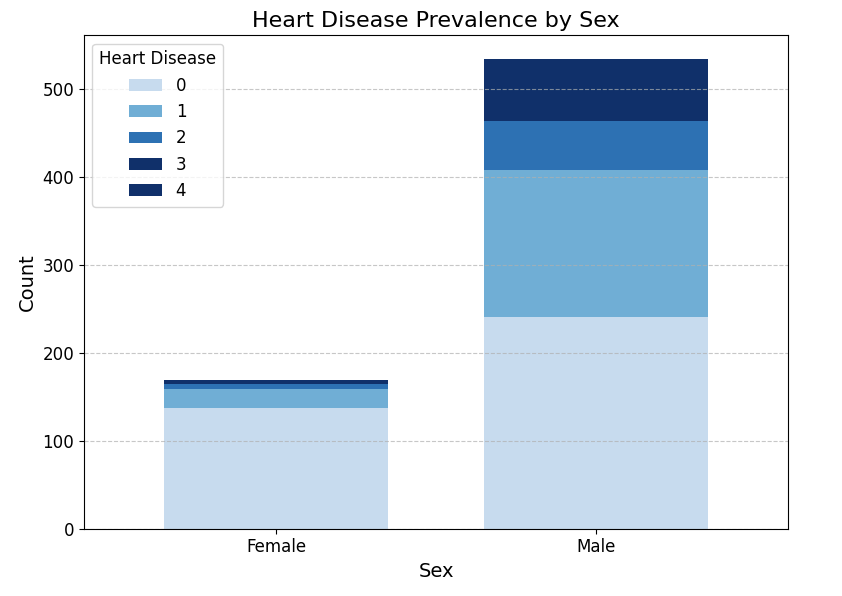
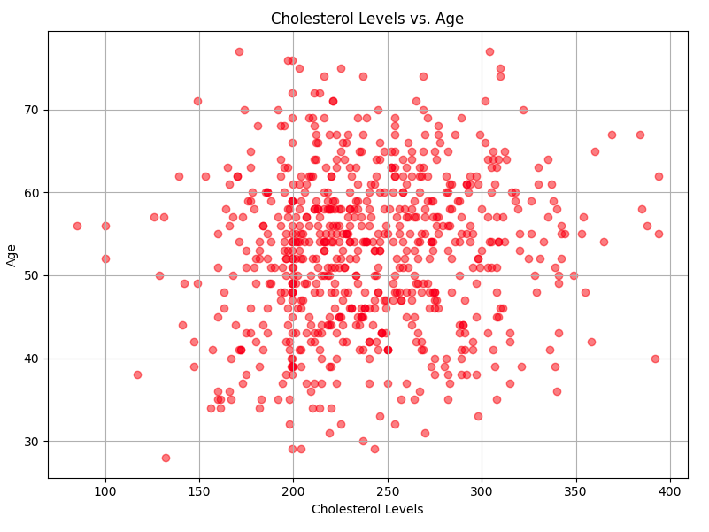

Heart Disease Analysis with Python
Analysis Overview:
This project delves into the realm of cardiovascular health, leveraging data analysis and machine learning techniques to explore patterns and predict the presence of heart disease. The dataset encompasses various patient attributes such as age, sex, chest pain type, blood pressure, cholesterol levels, and more, providing a rich foundation for investigation.
Exploratory Data Analysis:
Initial exploration involved assessing the distribution and relationships between different variables. Descriptive statistics and visualization techniques were employed to gain insights into the data's characteristics and potential correlations.
Feature Engineering:
To prepare the data for modeling, categorical variables were encoded, and numeric features were standardized. This step ensured consistency and compatibility across different algorithms.
Model Development:
Four machine learning algorithms—Random Forest, Logistic Regression,Built-in Cross Validation and Support Vector Machine (SVM)—were trained and evaluated to predict the likelihood of heart disease. Each model underwent rigorous testing and evaluation to determine its efficacy in classification tasks.
import numpy as np
import pandas as pd
import matplotlib.pyplot as plt
from sklearn.model_selection import train_test_split
from sklearn.preprocessing import LabelEncoder
from sklearn.ensemble import RandomForestClassifier
from sklearn.linear_model import LogisticRegression
from sklearn.svm import SVC
from sklearn.metrics import accuracy_score
from sklearn.preprocessing import StandardScaler
from xgboost import XGBClassifier
df = pd.read_csv('heart_disease_uci.csv')
df.head()
df.info()
df.describe()
df.isnull().sum()
df.duplicated().sum()
df.drop(['id'], axis=1, inplace=True)
#not needed
df.drop(['ca'], axis=1, inplace=True)
#lot of missing values

#0 id 920 non-null int64
#1 age 920 non-null int64
#2 sex 920 non-null object
#3 dataset 920 non-null object
#4 cp 920 non-null object
#5 trestbps 861 non-null float64
#6 chol 890 non-null float64
#7 fbs 830 non-null object
#8 restecg 918 non-null object
#9 thalch 865 non-null float64
#10 exang 865 non-null object
#11 oldpeak 858 non-null float64
#12 slope 611 non-null object
#13 ca 309 non-null float64
#14 thal 434 non-null object
#15 num 920 non-null int64
#So now we are going to fill the empty values with mean
#first we are going to fill the numeric values
df['trestbps'].fillna(df['trestbps'].mean(), inplace=True)
df['chol'].fillna(df['chol'].mean(), inplace=True)
df['thalch'].fillna(df['thalch'].mean(), inplace=True)
df['oldpeak'].fillna(df['oldpeak'].mean(), inplace=True)
df.isnull().sum()
# Replace empty values with mode for object-type columns
#Fill the empty values in object-type columns (fbs,restecg,exang,slope,thal) with the mode (most frequent value)
df['fbs'].fillna(df['fbs'].mode()[0], inplace=True)
df['restecg'].fillna(df['restecg'].mode()[0], inplace=True)
df['exang'].fillna(df['exang'].mode()[0], inplace=True)
df['slope'].fillna(df['slope'].mode()[0], inplace=True)
df['thal'].fillna(df['thal'].mode()[0], inplace=True)
#Checking one more time
df.isnull().sum()
#We are checking now the outliers
columns_with_outliers = ['trestbps', 'chol', 'thalch', 'oldpeak']
for column in columns_with_outliers:
Q1 = df[column].quantile(0.25)
Q3 = df[column].quantile(0.75)
IQR = Q3 - Q1
lower_bound = Q1 - 1.5 * IQR
upper_bound = Q3 + 1.5 * IQR
df[column] = df[column].apply(lambda x: x if lower_bound <= x <= upper_bound else None)
df.dropna(inplace=True)
df.describe()
# Filter data for patients with different levels of heart disease
heart1_disease_patients = df[df['num'] == 4]['age']
heart2_disease_patients = df[df['num'] == 3]['age']
heart3_disease_patients = df[df['num'] == 2]['age']
heart4_disease_patients = df[df['num'] == 1]['age']
heart5_disease_patients = df[df['num'] == 0]['age']
# Set binwidth for the histogram
binwidth = 5
# Define colors with varying lightness
colors = plt.cm.get_cmap('Reds', 5)
colors = [colors(i) for i in np.linspace(0.2,1, 5)]
colors.reverse()
# Create histogram
plt.hist([heart1_disease_patients, heart2_disease_patients, heart3_disease_patients, heart4_disease_patients, heart5_disease_patients], bins=range(min(df['age']), max(df['age']) + binwidth, binwidth), stacked=True, label=['Heart Disease 4', 'Heart Disease 3', 'Heart Disease 2', 'Heart Disease 1', 'No Heart Disease'], color=colors)
# Add labels and title
plt.title('Distribution of Age for Patients with and without Heart Disease')
plt.xlabel('Age')
plt.ylabel('Count')
plt.legend()
# Show plot
plt.show()
# Grouping the data by 'sex' and 'num', and counting the occurrences
grouped_data = df.groupby(['sex', 'num']).size().unstack()
# Define a colormap with 5 shades of blue
colors = plt.cm.get_cmap('Blues', 5)
# Plotting the count plot with custom colors
grouped_data.plot(kind='bar', stacked=True, figsize=(8, 6), width=0.7,color=colors(np.linspace(0.2,1,5)))
# Adding title and labels
plt.title('Heart Disease Prevalence by Sex', fontsize=16)
plt.xlabel('Sex', fontsize=14)
plt.ylabel('Count', fontsize=14)
# Adding legend with customized fonts and sizes
plt.legend(title='Heart Disease', labels=['0', '1', '2', '3', '4'], fontsize=12, title_fontsize=12)
# Customize x-axis and y-axis ticks and gridlines
plt.xticks(rotation=0, fontsize=12)
plt.yticks(fontsize=12)
plt.grid(axis='y', linestyle='--', alpha=0.7)
# Show plot
plt.tight_layout()
plt.show()

# Group the data by 'num' (heart disease) and select the 'chol' column
boxplot_data = [df[df['num'] == i]['chol'].dropna().values for i in sorted(df['num'].unique())]
# Create the box plot with custom colors
plt.figure(figsize=(8, 6))
plt.boxplot(boxplot_data, patch_artist=True, boxprops=dict(facecolor='tomato'), capprops=dict(color='maroon'), medianprops=dict(color='yellow'), whiskerprops=dict(color='maroon'))
# Adding title and labels
plt.title('Cholesterol Levels vs. Heart Disease')
plt.xlabel('Heart Disease')
plt.ylabel('Cholesterol Levels (mg/dl)')
# Customize x-axis ticks
plt.xticks([i + 1 for i in range(len(boxplot_data))], ['0', '1', '2', '3', '4'])
# Show plot
plt.grid(axis='y', linestyle='--', alpha=0.7)
plt.tight_layout()
plt.show()
# Create scatter plot
plt.figure(figsize=(8, 6))
plt.scatter(df['chol'], df['age'], alpha=0.5, color='red')
# Add labels and title
plt.title('Cholesterol Levels vs. Age')
plt.xlabel('Cholesterol Levels')
plt.ylabel('Age')
# Show plot
plt.grid(True)
plt.tight_layout()
plt.show()

# Define colors for each 'num' level
colors = ['salmon', 'tomato', 'red', 'brown', 'maroon']
# Create the scatter plot
plt.figure(figsize=(8, 6))
for i, num in enumerate(sorted(df['num'].unique())):
plt.scatter(df[df['num'] == num]['age'], df[df['num'] == num]['thalch'], color=colors[i], label=f'Heart Disease {num}')
# Adding title and labels
plt.title('Maximum Heart Rate Achieved by Age and Heart Disease Status')
plt.xlabel('Age')
plt.ylabel('Max Heart Rate (thalch)')
# Adding legend with customized fonts and sizes
plt.legend(title='Heart Disease', fontsize=10, title_fontsize=12)
# Show plot
plt.grid(True, linestyle='--', alpha=0.7)
plt.tight_layout()
plt.show()
# Calculate the average resting blood pressure for each heart disease status
average_trestbps = df.groupby('num')['trestbps'].mean()
# Create the bar plot
plt.figure(figsize=(8, 6))
plt.bar(average_trestbps.index, average_trestbps.values,color='tomato')
# Adding title and labels
plt.title('Average Resting Blood Pressure by Heart Disease Status')
plt.xlabel('Heart Disease')
plt.ylabel('Average Resting Blood Pressure (mm Hg)')
# Customize x-axis ticks
plt.xticks([0, 1, 2, 3, 4], ['0', '1', '2', '3', '4'])
# Show plot
plt.grid(axis='y', linestyle='--', alpha=0.7)
plt.tight_layout()
plt.show()
# Group the data by 'cp' and 'num' and count the occurrences
grouped_data = df.groupby(['cp', 'num']).size().unstack()
# Define the chest pain types
chest_pain_types = sorted(df['cp'].unique())
# Define colors for each 'num' level
colors = ['salmon', 'tomato', 'red', 'brown', 'maroon']
# Create the grouped bar plot
plt.figure(figsize=(10, 6))
for i, num in enumerate(sorted(df['num'].unique())):
plt.bar([x + i*0.1 for x in range(len(chest_pain_types))], grouped_data[num], width=0.1, color=colors[i], label=f'Heart Disease {num}')
# Adding title and labels
plt.title('Distribution of Chest Pain Type by Heart Disease Status')
plt.xlabel('Chest Pain Type')
plt.ylabel('Count')
# Customize x-axis ticks and labels
plt.xticks([x + 0.2 for x in range(len(chest_pain_types))], chest_pain_types)
# Adding legend with customized fonts and sizes
plt.legend(title='Heart Disease', fontsize=10, title_fontsize=12)
# Show plot
plt.grid(axis='y', linestyle='--', alpha=0.7)
plt.tight_layout()
plt.show()

# Grouping the data by 'fbs' and 'num', and counting the occurrences
grouped_data = df.groupby(['fbs', 'num']).size().unstack()
# Plotting the count plot
plt.figure(figsize=(8, 6))
colors = plt.cm.get_cmap('Reds', 5)
# Plotting the count plot with custom colors
grouped_data.plot(kind='bar', stacked=True, figsize=(8, 6), width=0.7,color=colors(np.linspace(0.2,1,5)))
# Adding title and labels
plt.title('Heart Disease Occurrences by Fasting Blood Sugar > 120 mg/dl', fontsize=16)
plt.xlabel('Fasting Blood Sugar > 120 mg/dl', fontsize=14)
plt.ylabel('Count', fontsize=14)
# Customize x-axis ticks
plt.xticks([0, 1], ['No', 'Yes'], rotation=0)
# Adding legend with customized fonts and sizes
plt.legend(title='Heart Disease', fontsize=12, title_fontsize=12)
# Show plot
plt.tight_layout()
plt.show()
#Trying four machine learning algorithms for our dataset
X = df.drop(columns=['num'])
y = df['num']
# Convert categorical variables to numerical using Label Encoding
label_encoder = LabelEncoder()
X_encoded = X.apply(label_encoder.fit_transform)
# Split the dataset into training and testing sets
X_train, X_test, y_train, y_test = train_test_split(X_encoded, y, test_size=0.2, random_state=42)
scaler = StandardScaler()
X_train_scaled = scaler.fit_transform(X_train)
X_test_scaled = scaler.transform(X_test)
# Step 2: Choose Machine Learning Algorithms
# Initialize the classifiers
rf_classifier = RandomForestClassifier(random_state=42)
logistic_classifier = LogisticRegression(random_state=42)
svm_classifier = SVC(random_state=42)
xg_classifier = XGBClassifier(random_state=42)
# Step 3: Train the Models
rf_classifier.fit(X_train_scaled, y_train)
logistic_classifier.fit(X_train_scaled, y_train)
svm_classifier.fit(X_train_scaled, y_train)
xg_classifier.fit(X_train_scaled,y_train)
# Step 4: Evaluate the Models
# Make predictions on the testing data
rf_predictions = rf_classifier.predict(X_test_scaled)
logistic_predictions = logistic_classifier.predict(X_test_scaled)
svm_predictions = svm_classifier.predict(X_test_scaled)
xg_predictions = xg_classifier.predict(X_test_scaled)
# Evaluate accuracy of each model
rf_accuracy = accuracy_score(y_test, rf_predictions)
logistic_accuracy = accuracy_score(y_test, logistic_predictions)
svm_accuracy = accuracy_score(y_test, svm_predictions)
xg_accuracy = accuracy_score(y_test,xg_predictions)
print("Random Forest Accuracy:", rf_accuracy)
print("Logistic Regression Accuracy:", logistic_accuracy)
print("SVM Accuracy:", svm_accuracy)
print("XGBoost Accuracy:", xg_accuracy)